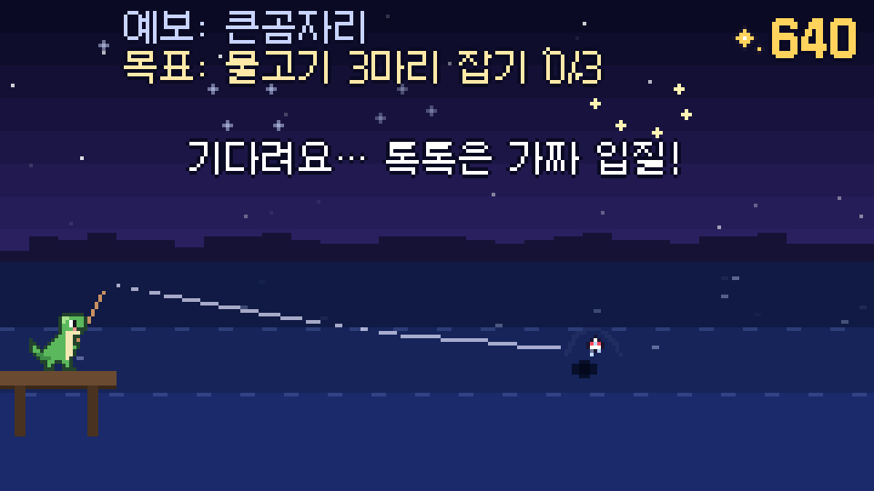
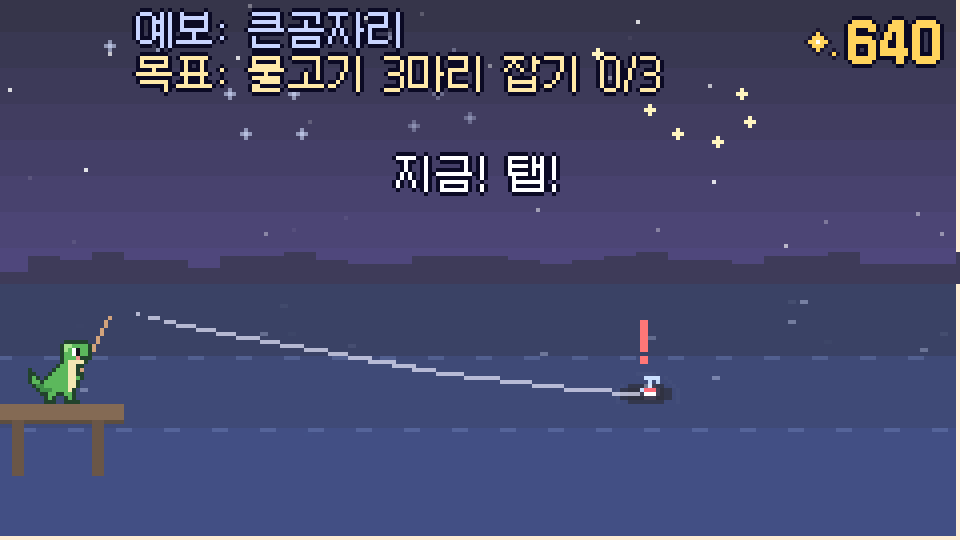
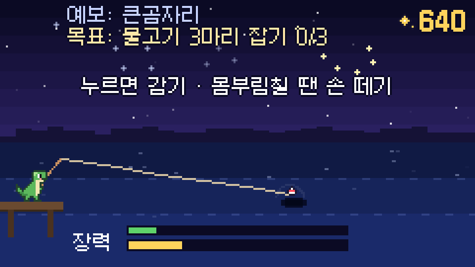
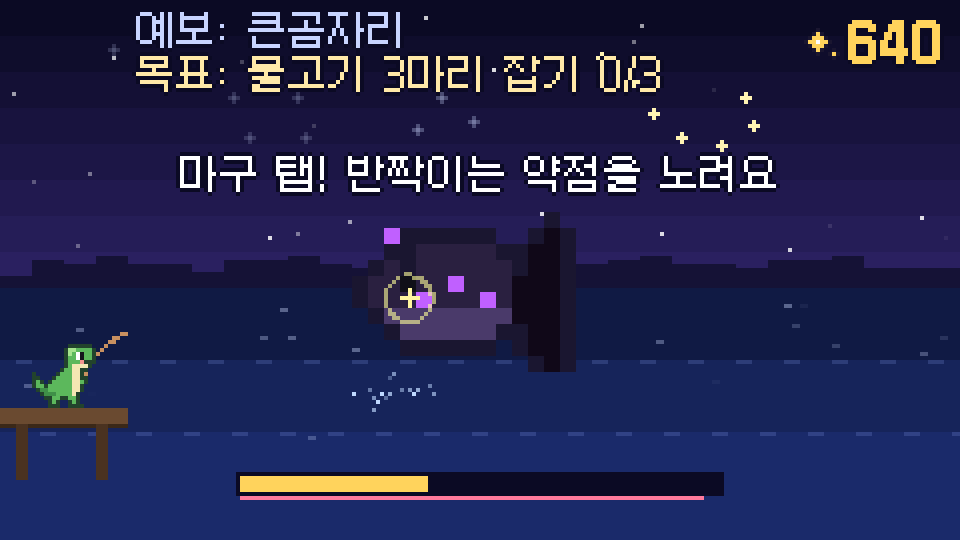
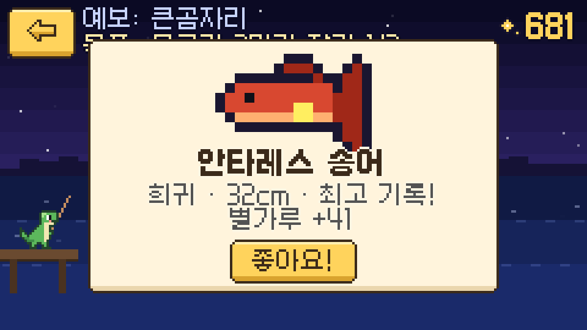
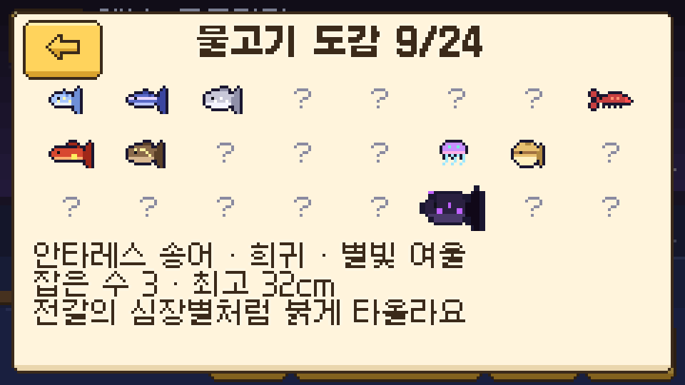

은하수 낚시
밤하늘이 비치는 은하수 호수에서 별자리 물고기를 낚아요. 조작은 길게 누르기와 탭뿐이고, 보스 물고기는 끌어올릴 때 마구 탭해서 기절시켜야 잡혀요.

휴대폰에서는 가로로 돌리고 전체 화면으로 하는 게 가장 편해요.
조작
| 던지기 | 길게 눌러 힘을 모으고 손 떼기 세게 던질수록 먼 구역 (희귀 · 보스) |
|---|---|
| 입질 | 찌가 쏙 들어가고 "!"가 뜰 때 탭 톡톡 건드리는 가짜 입질에 누르면 도망가요 |
| 감기 | 누르고 있으면 감기 · 장력이 올라요 물고기가 몸부림칠 땐(!!) 손 떼기 |
| 보스 | 마구 탭! 반짝이는 약점을 치면 3배 |
PC: 마우스, 또는 스페이스로 누르기
게임 정보
| 장르 | 캐주얼 낚시 + 수집 · 강화 |
|---|---|
| 콘텐츠 | 구역 3곳, 물고기 24종 (보스 3종), 미끼 3종, 강화 4종, 하늘 별자리 3개, 손님 목표, 오늘의 예보 |
| 만든 도구 | Godot 4 · 240x135 도트 화면 |
| 상태 | 1차 버전 웹 공개 · 다음 콘텐츠 기획 중 |
기획 포인트
"아주 간단하게 던지고 잡는 낚시"에 감성(은하수 호수)과 판단(언제 손을 뗄지, 어디에 던질지)을 얹었어요.
한 판 흐름
던지기→
기다리기→
입질 탭→
감기→
보스 기절→
낚아 올리기
한 번 던지는 데 10초 안팎. 단계마다 "누를까, 참을까"를 하나씩만 고르게 해서 조작은 단순해도 손에 긴장감이 남게 했어요.
참는 판단
톡톡 가짜 입질에 누르면 도망, 몸부림칠 때 계속 감으면 줄이 끊어짐
어디에 던질지
던지는 힘 = 구역. 가까운 물가는 쉽고, 먼 깊은 은하는 희귀 · 보스
오늘의 예보
날짜마다 바뀌는 별자리 · 혜성 예보를 보고 구역과 미끼를 고름
보스 기절
마구 치기 vs 약점 노려 치기. 보스마다 다른 방해 패턴 3가지
하늘이 채워짐
별자리 물고기 무리를 다 잡으면 하늘에 별자리가 선으로 이어져 빛남
보스 3종, 다른 방해
- 블랙홀 아귀 — 기절 게이지가 조금씩 빨려 들어감
- 초신성 고래 — 하얗게 빛나는 동안은 쳐도 안 먹힘 (박자 보기)
- 달 삼키는 용 — 약점이 두 배 빨리 옮겨 다님
성장 · 수집
- 별가루로 줄 · 릴 · 찌 · 망치 강화 (각 5단계)
- 혜성 미끼(희귀 ×3), 블랙홀 미끼(보스만 묾)
- 도감 24칸 + 물고기마다 최고 크기 기록
- 손님 목표가 차례로 나와 다음에 할 일을 알려 줌
만든 과정
기획 원안 → 기획서 → 1차 제작 → 플레이 점검 순서로 만들었어요.
- 원안아주 간단하게 던지고 잡는 낚시 · 감수성이 느껴지는 은하수 호수 · 다양한 물고기 · 낚싯대 강화 · 보스는 마구 타격해서 기절
- 기획한 판 흐름 5단계, 물고기 무리 6가지, 구역 · 미끼 · 예보로 전략을 더하고 1차 제작 범위를 정함
- 1차물고기 24종 · 미끼 3 · 강화 4 · 보스 패턴 3 · 하늘 별자리 · 손님 목표 · 도감, 한국어 · 영어
- 손맛플레이 점검 후 손맛 다듬기: 다가오는 물고기 그림자, 휘는 낚싯대, 장력에 따라 빨개지는 줄, 물방울 · 화면 흔들림, 물 밖으로 튀어 오르는 낚아 올리기
스크린샷





